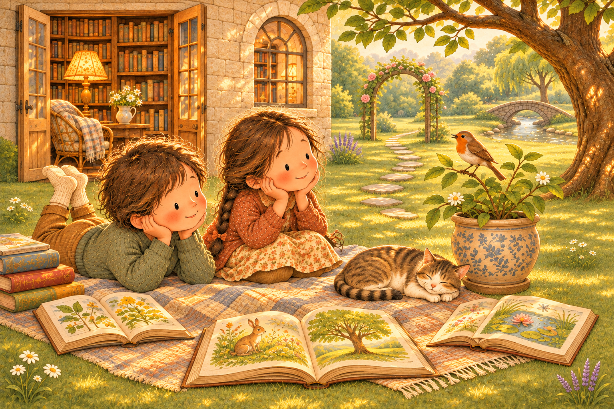
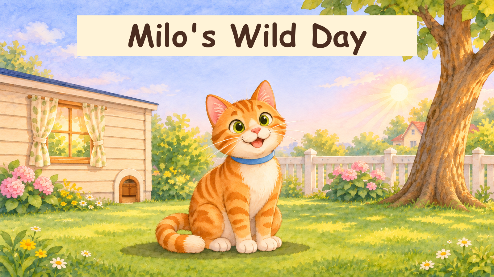

소리로 헤아리는 마음
소리에 귀를 기울이고, 동물과 식물의 마음을 상상해요.
떠오르는 생각은 모두 소중해요.

첫 번째 이야기 · 고양이
마일로의 우당탕탕 하루
장난기 많은 고양이 Milo와 함께 하루를 걸어 볼까요? 소리를 듣고, Milo와 친구들의 마음을 천천히 상상해 봐요.
이야기 펼치기 →동물과 식물의 이야기가 이곳에 하나씩 모여요.
말로 나누거나, 마음속으로 조용히 생각해도 좋아요.

소리에 귀를 기울이고, 동물과 식물의 마음을 상상해요.
떠오르는 생각은 모두 소중해요.

장난기 많은 고양이 Milo와 함께 하루를 걸어 볼까요? 소리를 듣고, Milo와 친구들의 마음을 천천히 상상해 봐요.
이야기 펼치기 →동물과 식물의 이야기가 이곳에 하나씩 모여요.
말로 나누거나, 마음속으로 조용히 생각해도 좋아요.